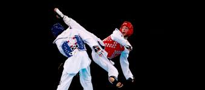

A importância dos exercícios físicos

Os exercícios são muito importantes para o fortalessimento dos músculos da pessoa e também pode capacitar as pessoas de fazer coisas mais difíceis, além de ser importante para a saúde da pessoa.
Esses são exemplos de esportes que eu pratico:
.jpeg)
O taekwondo:
O taekwondo é uma luta onde se usa muito das pernas, mas também é permitido socar. Em uma luta de taekwondo, só é permitido acertar as partes do colete fazendo pontos. O principal benefício de praticar esse esporte é o grande fotalecimento das pernas, a elasticidade, e sua memória também é aprimorada pela outra modalidade do taekwondo. Essa outra modalidade se chama poonsei e é uma sequência de movimentos com defesas, ataques e chutes. Para ganhar em uma competição de poonsei e nessessário faxer uma pontuação maior do que a de seus oponentes de mesma faixa. A nota mássima é 10 e os juises dão suas notas de acordo com os erros da pessoa e depois fazem uma média dessas notas.
O futsal:
O futsal é um esporte praticado em quadras não muito grandes. O futsal pode trazer benefícios como a agilidade, a força na perna, o rápido raciocino e a velocidade. O time de futsal é composto por 4 jogadores e o goleiro e vence o tiver que marcar mais gols.
O motivo de eu gostar tanto deles:
Eu gosto muito desses dois esportes, pois podemos praticar eles com amigos tornando sempre mais divertidos, também gosto de que muito importante treinar para ficar melhor, o que deixa ainda mais divertido o caminho até virar um grande jogador ou lutador.